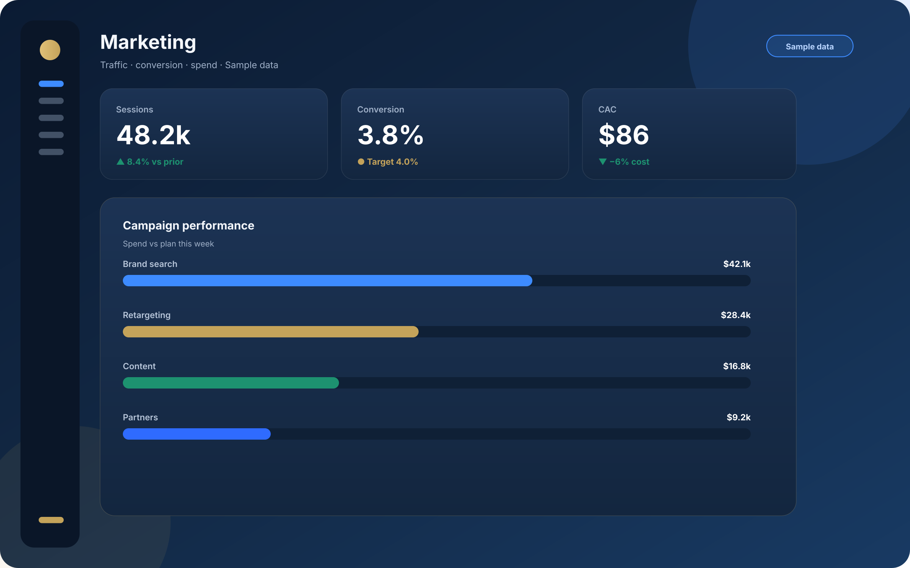
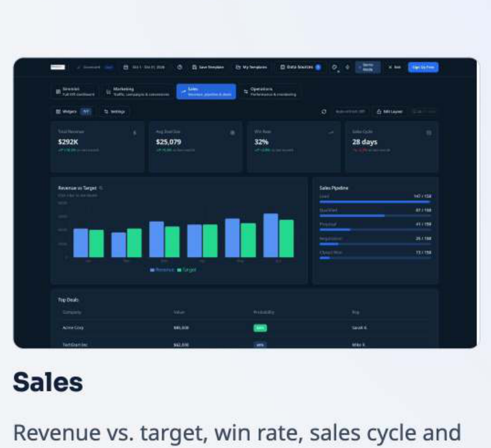
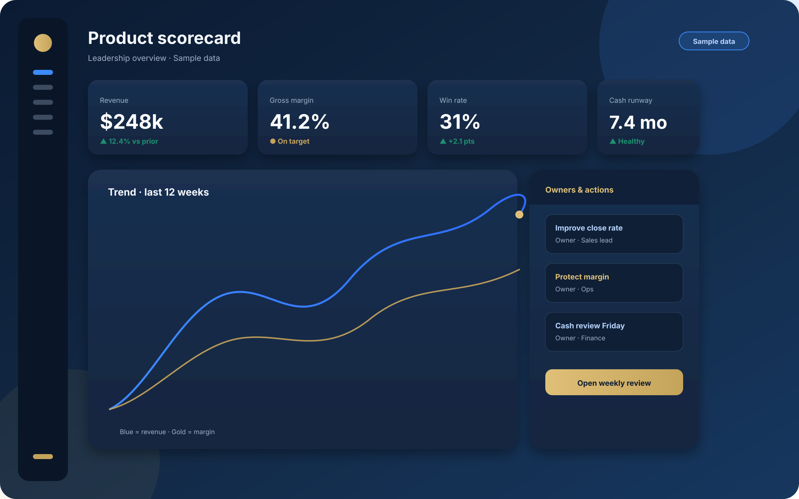

Definitions drift
Teams disagree on what a lead, a sale or a margin means, so no report is trusted.
DataDashOS
DataDashOS defines the KPIs your business should run on, tracks them, helps you hit them, and adapts them as you grow.
Hard work without a scorecard is just a hamster wheel.

Sample data
The problem
Most businesses never sit down and decide which few numbers define success. So everyone works hard, and no one agrees on what winning looks like.
Sound familiar?
Teams disagree on what a lead, a sale or a margin means, so no report is trusted.
Accounting, CRM, marketing and spreadsheets each hold part of the truth. Nobody sees the whole scorecard.
Without owners and follow-through, the same problems come back every week.
Another dashboard won't fix that. The wrong metrics, beautifully charted, are still the wrong metrics.
The big idea
Before you hire, spend on marketing or buy another tool, decide what winning looks like. KPIs turn vision into targets, targets into weekly actions, and actions into results.
Try it
Tell us a little about your business and we'll show you the KPIs a business like yours should run on.
How it works
Tell DataDashOS about your industry, model, goals and stage. It recommends the KPIs a business like yours should run on, with clear definitions, owners and targets. You never start from a blank dashboard.
Every KPI, every department, one scorecard. See status, targets and trends at a glance. Connect your tools, import a CSV, or enter values by hand.
A weekly AI review explains what changed and why, then recommends what to do. Every recommendation becomes an action with an owner, tracked against the KPI it's meant to move.
Your business changes, and your KPIs should change with it. DataDashOS spots room for improvement, flags what's slipping, and recommends new KPIs as you grow.
What's inside
| Module | What it does |
|---|---|
| KPI scorecard | Industry blueprints, targets, trends, notes and forecasts. |
| Dashboards | Executive, marketing, sales and operations views with period-over-period comparisons. |
| Weekly reviews | AI-written summaries, recommendations and tracked action items. |
| AI business coach | Coach chat and decision briefs grounded in your own KPIs, with specialist perspectives from finance to customer experience. |
| Data connections | Built to connect with QuickBooks Online, GoHighLevel and Google Ads, plus CSV import. |
| Teams & admin | Workspaces, roles, invitations, audit logs and custom branding. |




Why KPI-first
| Dashboard-first tools | DataDashOS |
|---|---|
| Show whatever data you connect | Start with what success means for you |
| Built for analysts | Built for owners and leaders |
| Leave interpretation to you | Explain what changed and what to do |
| Static metrics | KPIs that adapt as you grow |
| Reports | A weekly rhythm of review, action and accountability |
Unify performance, not software. DataDashOS sits on top of the tools you already run. Nothing to rip out.
Who it's for
Built by operators
DataDashOS was built by people who've run a business for decades and lived this problem: plenty of software, plenty of effort, and no shared scorecard. So we built the operating rhythm we wished we'd had.
Add a named founder, photo and one verified result here.
Next step
Join the waitlist and be among the first to get access.
FAQ
Final CTA
Join the waitlist and be among the first to run your business KPI-first.